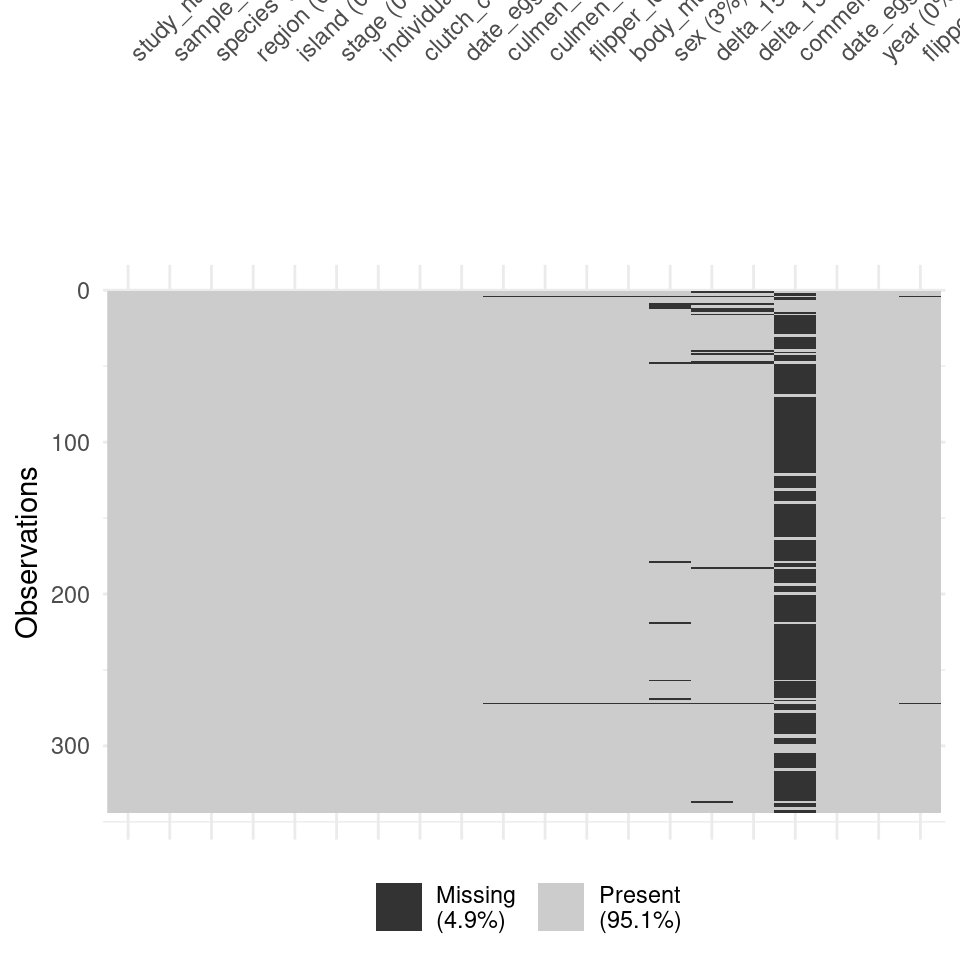
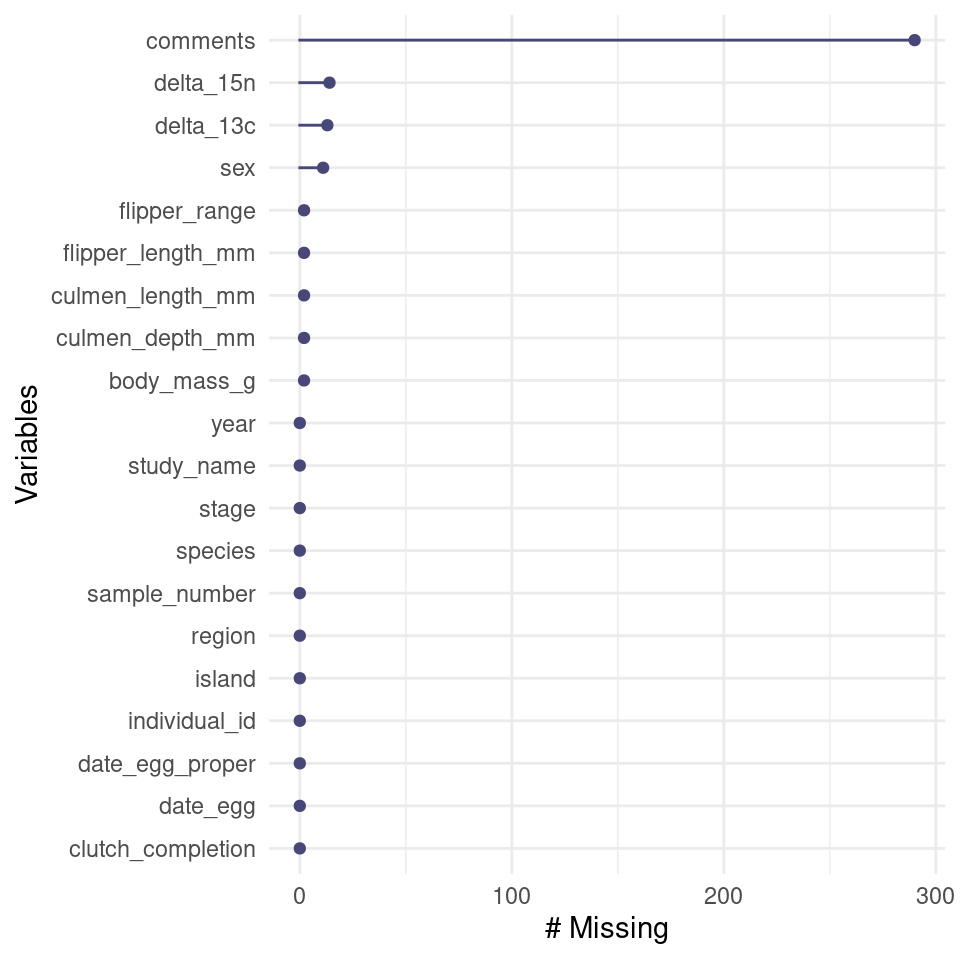
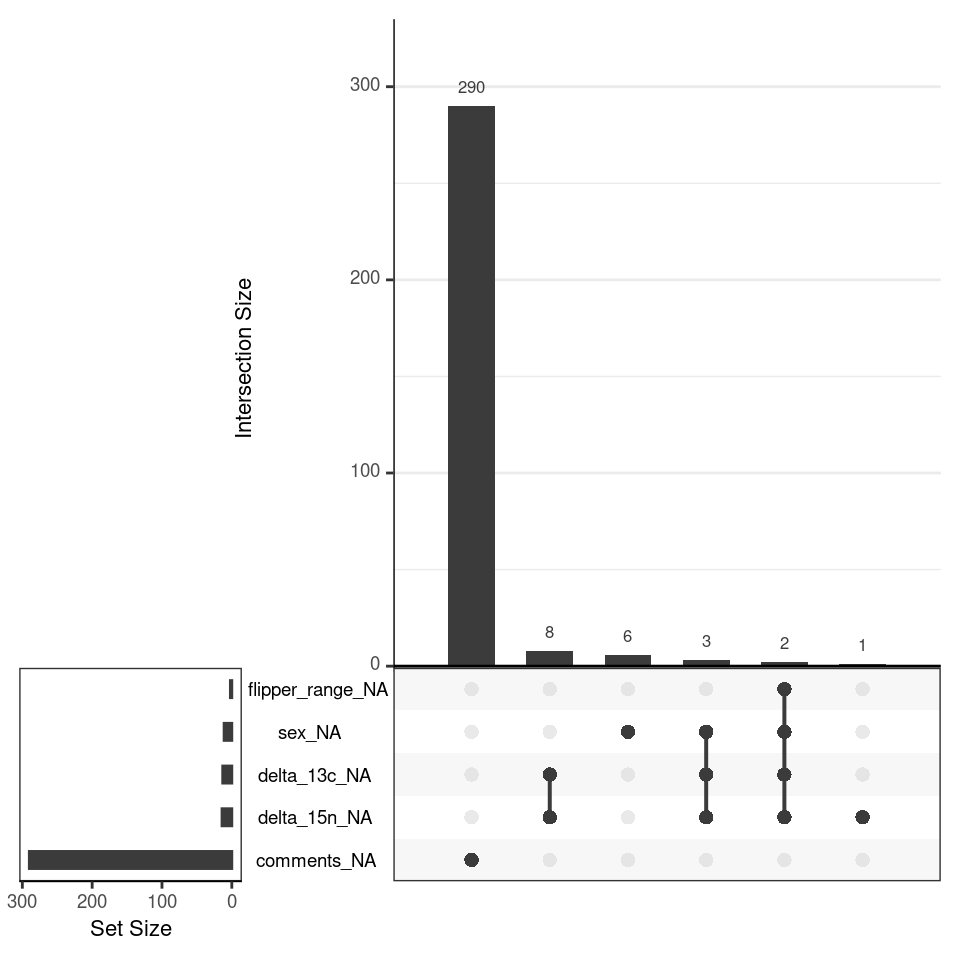
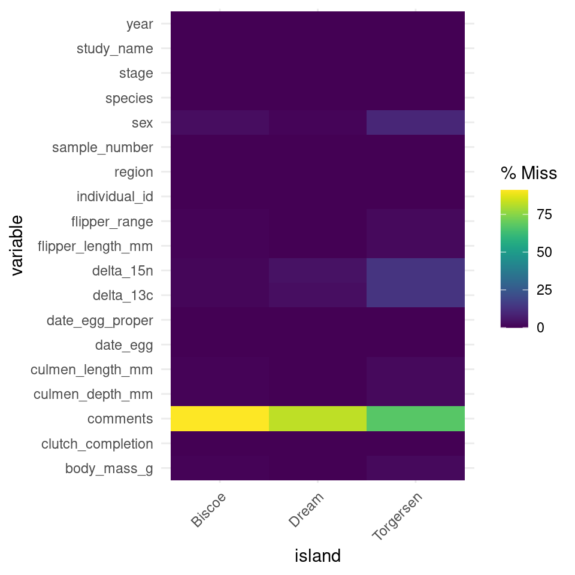
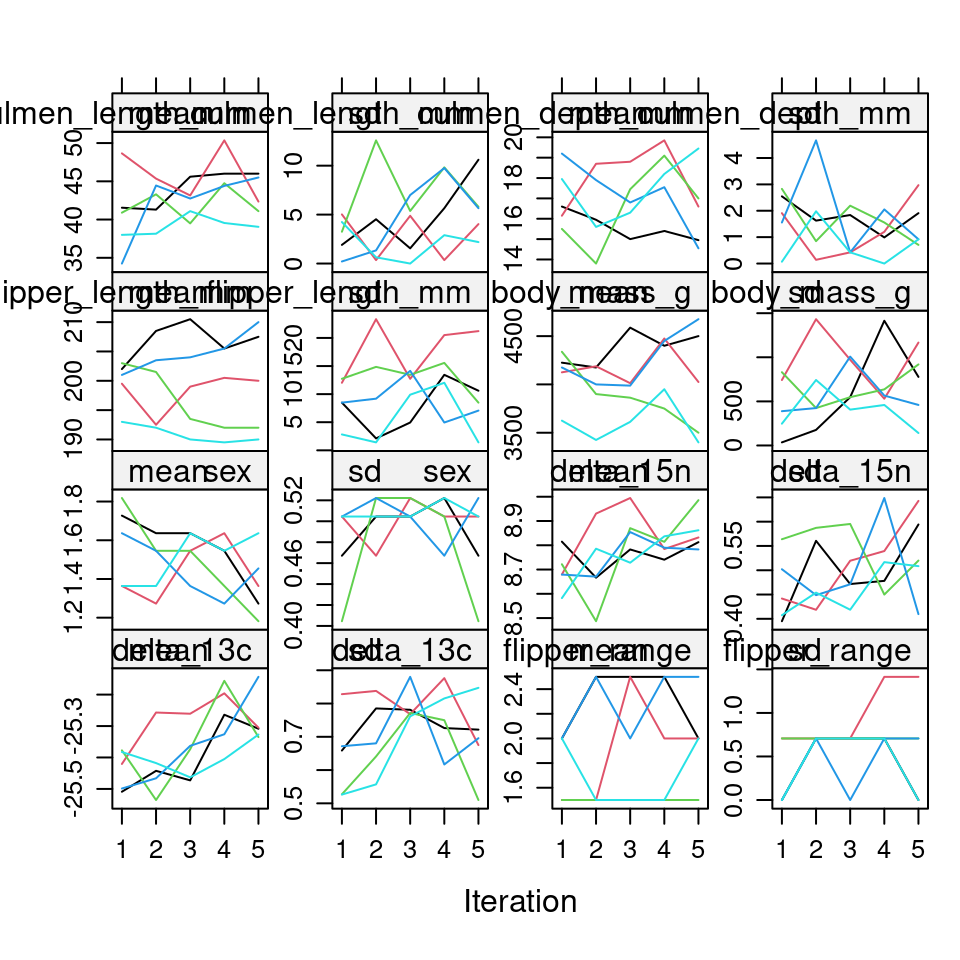
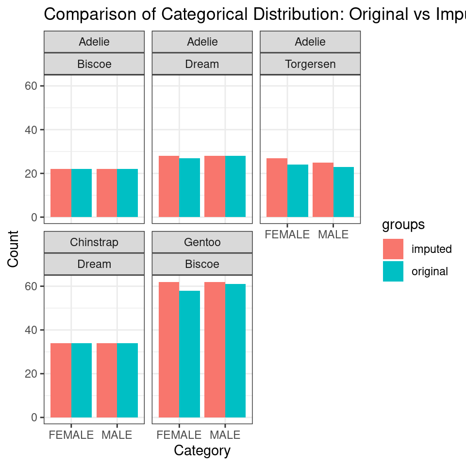
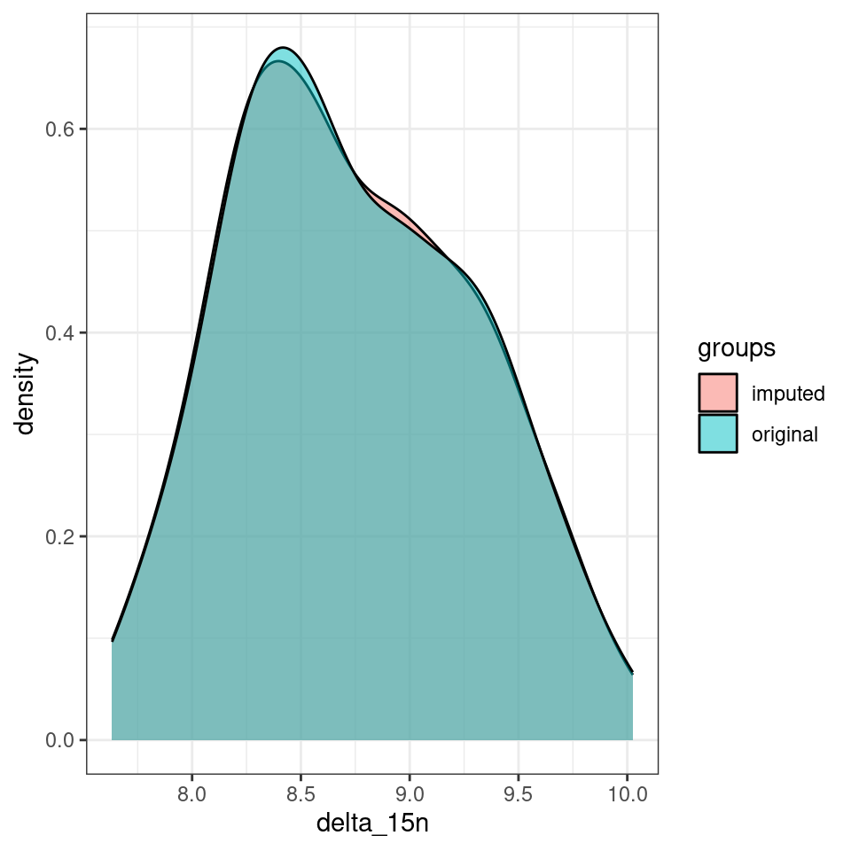

59 Dealing with Missing Data
The palmerpenguins dataset contains data on penguins from the Palmer Archipelago in Antarctica. This dataset includes several measurements such as species, island, bill length, bill depth, flipper length, body mass, and sex. However, it contains missing values, particularly in the sex column. In this chapter, we will:
Use the
naniarpackage to visualize and understand the patterns of missing data.Use the
micepackage to perform multiple imputation to handle missing values.Discuss how to choose an appropriate imputation algorithm.
Check the quality of imputation using diagnostic plots and statistical checks.
59.1 Visualise missing data with naniar
The naniar package provides functions to visualize and explore missing data. Start by visualizing the missing values:
# Visualise missing data
naniar::vis_miss(penguins)
The vis_miss() function creates a heatmap-like plot where missing values are shown in a different color, allowing you to quickly see where missing data occurs.
You can also use a gg_miss_var plot to see the proportion of missing values by variable
# Visualize missing data by variable
gg_miss_var(penguins)
59.2 Explore the Patterns of Missingness
Understanding the patterns of missingness can help you decide on an appropriate imputation method:
# Explore missing data patterns
miss_var_summary(penguins)| variable | n_miss | pct_miss |
|---|---|---|
| comments | 290 | 84.3 |
| delta_15n | 14 | 4.07 |
| delta_13c | 13 | 3.78 |
| sex | 11 | 3.20 |
| culmen_length_mm | 2 | 0.581 |
| culmen_depth_mm | 2 | 0.581 |
| flipper_length_mm | 2 | 0.581 |
| body_mass_g | 2 | 0.581 |
| flipper_range | 2 | 0.581 |
| study_name | 0 | 0 |
| sample_number | 0 | 0 |
| species | 0 | 0 |
| region | 0 | 0 |
| island | 0 | 0 |
| stage | 0 | 0 |
| individual_id | 0 | 0 |
| clutch_completion | 0 | 0 |
| date_egg | 0 | 0 |
| date_egg_proper | 0 | 0 |
| year | 0 | 0 |
We can combine this with group_by() to get insights into the patterns surrounding our missing data
| species | island | variable | n_miss | pct_miss |
|---|---|---|---|---|
| Adelie | Torgersen | sex | 5 | 9.62 |
| Adelie | Biscoe | sex | 0 | 0 |
| Adelie | Dream | sex | 1 | 1.79 |
| Gentoo | Biscoe | sex | 5 | 4.03 |
| Chinstrap | Dream | sex | 0 | 0 |
An upset plot can be used to visualise the patterns of missingness, or rather the combinations of missingness across cases.
gg_miss_upset(penguins)
gg_miss_fct(): This function allows you to explore missing data by levels of a factor. It is useful for checking if missingness is related to a categorical variable.
# Explore missing data by species
gg_miss_fct(penguins, fct = island)
59.3 Handling missing data
59.3.1 Deleting Missing Rows
One of the simplest approaches to address missing data in a dataset is to delete observations (rows) that contain any missing values. This method, often referred to as "listwise deletion" or "complete case analysis," involves removing entire records from the analysis if they are missing any data point in one or more variables
- When to Consider Deleting Missing Rows:
Minimal Missing Data: If the missing data is slight and seemingly random, eliminating those incomplete entries is unlikely to significantly affect the dataset's overall quality.
MCAR Data: Deletion is most appropriate when the missing data is Missing Completely At Random (MCAR), meaning there's no systematic difference between the missing and observed values.
59.3.2 Impute missing data
Before performing imputation, it’s important to choose the right algorithm based on the data type and the nature of the missingness. The mice package supports various imputation methods for different types of data:
59.3.3 Types of Missingness:
Missing Completely at Random (MCAR): The missing data has no relationship with any other variable. Any imputation method can be used, but simpler methods like mean/mode imputation might suffice.
Missing at Random (MAR): The missingness is related to other observed variables. Imputation methods that take into account other variables, such as predictive mean matching or multiple regression, are appropriate.
Missing Not at Random (MNAR): The missingness is related to the missing values themselves. In such cases, data augmentation, sensitivity analysis, or using domain knowledge for imputation might be necessary.
59.3.4 Choosing the Imputation Method:
Here are some common imputation methods provided by mice and when they are most appropriate:
Mean/Mode Imputation (mean, mode): Fills in missing values with the mean (numeric data) or mode (categorical data) of observed values. Simple but can distort the distribution and underestimate variability.
Predictive Mean Matching (pmm): Matches the missing value with observed values that have a similar predicted value based on a regression model. It’s useful for numerical data and preserves the original distribution.
Logistic Regression (logreg): Suitable for binary categorical data, like sex in the penguins dataset, and uses logistic regression to predict the missing values.
Polytomous Regression (polyreg): Suitable for multinomial categorical data with more than two levels (e.g., species with Adelie, Gentoo, and Chinstrap). Uses polytomous regression to impute missing values.
59.3.5 Impute Missing Values Using the mice Package
Given that the sex column is a binary categorical variable, we can use logreg or polyreg for imputation. For this example, we will use logreg.
Prepare the data by the selecting relevant columns we want to use as predictors to impute our missing values:
# Run the mice function with maxit=0
# This allows us to extract the default predictor matrix and methods without performing actual imputation
imp <- mice(penguins, maxit=0)
# Extract the predictor matrix from the imputation object
predM <- imp$predictorMatrixNote sex will not be included for imputation unless it is coded as a factor
# Extract the methods of imputation used for each variable
meth <- imp$method
# Set the imputation method for certain columns to an empty string "" to exclude them from imputation
# For these columns, missing values will be left as is and not imputed
meth["sex"] <- "logreg"
# Print the updated methods matrix to review the imputation methods assigned to each variable
meth## study_name sample_number species region
## "" "" "" ""
## island stage individual_id clutch_completion
## "" "" "" ""
## date_egg culmen_length_mm culmen_depth_mm flipper_length_mm
## "" "pmm" "pmm" "pmm"
## body_mass_g sex delta_15n delta_13c
## "pmm" "logreg" "pmm" "pmm"
## comments date_egg_proper year flipper_range
## "" "" "" "polyreg"
# if necessary we can determine the variables that will be used for imputation
predM["sex", ] <- c(0,0,1,1,1,1,1,1,1,0,0,0,1,0,0,0,0,0,1,0)
# With this command, we tell mice to impute the anesimp2 data, create 5
# datasets, use predM as the predictor matrix and don't print the imputation
# process. If you would like to see the process, set print as TRUE
imputed_data <- mice(penguins, maxit = 5,
predictorMatrix = predM,
method = meth, print = FALSE)59.3.6 Check for convergence
In order to obtain correct results, the MICE algorithm needs to have converged. This can be checked visually by plotting summaries of the imputed values accross the iterations.
The mean and variance of the imputed values per iteration and variable are stored in the elements chainMean and chainVar of the mids object.

Now that we know that imputation has converged, we can compare the distribution of the imputed values against the distribution of the observed values. When our imputation models fit the data well, they should have similar distributions (conditional on the covariates used in the imputation model).
# Create a complete dataset with imputed values for 'sex'
penguins_imputed <- complete(imputed_data)
# Explore missing data patterns
miss_var_summary(penguins_imputed)| variable | n_miss | pct_miss |
|---|---|---|
| comments | 290 | 84.3 |
| study_name | 0 | 0 |
| sample_number | 0 | 0 |
| species | 0 | 0 |
| region | 0 | 0 |
| island | 0 | 0 |
| stage | 0 | 0 |
| individual_id | 0 | 0 |
| clutch_completion | 0 | 0 |
| date_egg | 0 | 0 |
| culmen_length_mm | 0 | 0 |
| culmen_depth_mm | 0 | 0 |
| flipper_length_mm | 0 | 0 |
| body_mass_g | 0 | 0 |
| sex | 0 | 0 |
| delta_15n | 0 | 0 |
| delta_13c | 0 | 0 |
| date_egg_proper | 0 | 0 |
| year | 0 | 0 |
| flipper_range | 0 | 0 |
59.3.7 Check against original data
test_data <- bind_rows("original" = penguins, "imputed" = penguins_imputed, .id = "groups")
test_data |>
drop_na(sex) |>
ggplot(aes(x = sex, fill = groups)) +
geom_bar(position = "dodge") +
labs(title = "Comparison of Categorical Distribution: Original vs Imputed",
x = "Category",
y = "Count") +
facet_wrap(~ species + island)
# Density plots
test_data |>
drop_na(sex) |>
ggplot(aes(x = delta_15n, fill = groups)) +
geom_density(alpha=0.5) 